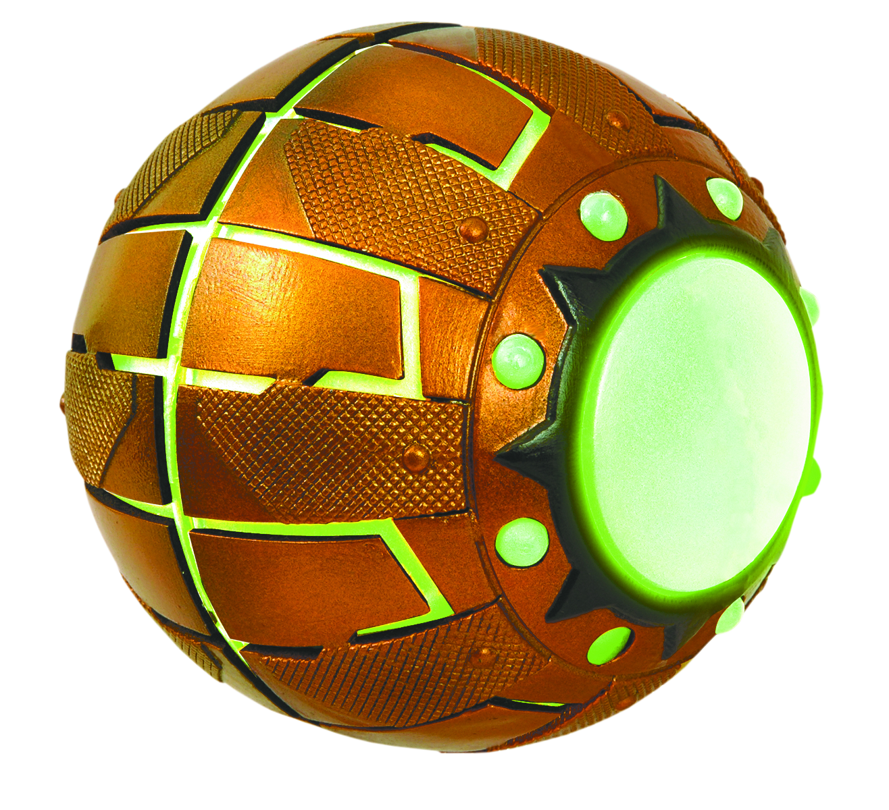

Hii take A Look
To This WebSite
is Created with Gsap

Spiderman Secret !
Spider-Man's secret identity is Peter Benjamin Parker. Initially, Peter was depicted as a teenage high-school student and an orphan raised by his Aunt May and Uncle Ben in New York City after his parents Richard and Mary Parker died in a plane crash. Lee and Ditko had the character deal with the struggles of adolescence and financial issues and gave him many supporting characters, such as Flash Thompson, J. Jonah Jameson, and Harry Osborn; romantic interests Gwen Stacy, Mary Jane Watson, and the Black Cat; and enemies such as the Green Goblin, Doctor Octopus, and Venom. In his origin story, Spider-Man gets his superhuman spider-powers and abilities after being bitten by a radioactive spider. These powers include superhuman strength, agility, reflexes, stamina, durability, coordination, and balance; clinging to surfaces and ceilings like a spider; and detecting danger with his precognition ability called "spider-sense". He builds wrist-mounted "web-shooter" devices that shoot artificial spider-webs of his own design, which he uses both for fighting and for web-swinging across the city. Peter Parker originally used his powers for his own personal gain, but after his Uncle Ben was killed by a thief that Peter could not stop, he began to use his powers to fight crime by becoming Spider-Man.
GREEN GOBLIN IS BACK
Who The Hell is Green Goblin ?
The Green Goblin is the alias of several supervillains appearing in American comic books published by Marvel Comics. Created by writer Stan Lee and artist Steve Ditko, the first and best-known incarnation is Norman Osborn, who is generally regarded as one of the archenemies of the superhero Spider-Man, along with Doctor Octopus and Venom.[1] Originally a manifestation of chemically induced insanity, others such as Harry Osborn would take on the persona. The Green Goblin is a Halloween-themed supervillain whose weapons resemble bats, ghosts, and jack-o'-lanterns and in most incarnations uses a hoverboard or glider to fly.
DOCTOR


Octopus
Ha Ha ! Every One Knows About Me !
Doctor Octopus (Dr. Otto Gunther Octavius), also known as Doc Ock for short, is a fictional character appearing in American comic books published by Marvel Comics. The character was created by Stan Lee and Steve Ditko and first appeared in The Amazing Spider-Man #3 (July 1963). He is a highly intelligent, myopic, and stocky mad scientist who sports four strong and durable appendages resembling an octopus's tentacles, which extend from the back of his body and can be used for various purposes. After his mechanical harness became permanently fused to his body during a lab accident, he turned to a life of crime, and came into conflict with the superhero Spider-Man. He has endured as one of Spider-Man's most prominent villains, and is regarded as one of his three archenemies, alongside the Green Goblin and Venom. He is the founder and leader of the Sinister Six, the first supervillain team to oppose Spider-Man.
While usually portrayed as a supervillain, Doctor Octopus has also been occasionally depicted as a conflicted antihero and ally of Spider-Man. Following Spider-Man's death in the 2012 storyline "Dying Wish", which saw a dying Octavius swapping bodies with the hero and letting him die in his original body, Octavius was motivated to prove he could be a better Spider-Man. As such, he adopted the Superior Spider-Man alias, introduced in Avenging Spider-Man #15.1 following a cameo in Daredevil vol. 3 #21 (both December 2012). The Superior Spider-Man possesses all of the original Spider-Man's abilities, memories, and equipment, along with additional gadgets created by Octavius, though he often struggles to live up to his predecessor's legacy and seeks to turn his life around after being a villain for years. In 2013, Marvel launched a 45-issue The Superior Spider-Man comic book series focusing on the character's redemption and superhero career. The original Spider-Man has since been resurrected after the death of Otto Octavius. Following Spider-Verse, a copy of his consciousness became a villain, though a second volume of The Superior Spider-Man launched in 2018 saw the duplicate taking on the mantle before returning to the Doctor Octopus mantle as an antihero, having his soul restored and memories of redemption erased by Mephisto, before returning to the role of Superior Spider-Man in 2023 in a new series by Dan Slott.
 

Electro
Hi! Im Electro
While Maxwell "Max" Dillon, an electrical engineer and lineman, is repairing a power line, a freak lightning accident causes a mutagenic change that transforms him into a living electrical capacitor.[9] His powers are initially weak, so he spends some time stealing electrical equipment from Stark Industries to charge himself. During this time, he is approached by Magneto, who considers him a potential recruit for his Brotherhood of Evil Mutants, claiming that Dillon's power rival his own, but Dillon refuses. The following day, Dillon is confronted by a small-time thug from whom he was borrowing money to pay for the machinery he needed. When the thug draws a gun on him because he did not pay back the money yet, he responds by shooting a blast of lightning through the thug's chest—the first time Dillon ever kills anybody.